Recognizing the Common Types of Functions
Whenever we can classify a function as one of the familiar types such as quadratic or trigonometric, we know it will have certain well-known properties. For example, a trigonometric function will be periodic. As you learn to use the vocabulary of functions more and more precisely, it will be easier for you to read mathematics with genuine understanding. When you are first presented with any formula, you should try to establish what type of a function it describes. This may require you to rewrite the function in order to convert it into a standard form.
Be familiar with the graphs of these functions as well, taking care to understand how the function and its parameters affects its domain, range, general shape, intercepts, and other key values such as turning points.
Linear Functions
The most basic function you will encounter is a linear function. The name suggests this function represents a straight line, where a fixed change in the independent variable yields a fixed change in the dependent variable. This is represented as
where \(m\) and \(b\) are constants. \(m\) is the change in dependent tvariable for every unit change in the independent variable. This value represents the slope of the line, or the ratio of the rise (change in the dependent variable) to the run (change in the independent variable). \(b\) represents the \(y\)-intercept, which is clear when \(x=0\) is substituted.
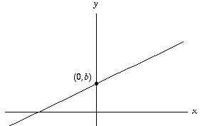Examples:

Quadratic Functions
When you see quadratic, think quad as in four things as in a square. A quadratic function is like adding a linear function to a term with a square, that is, a power of \(2\):
where \(a,b,c\) are constants and \(a\) is not \(0\) - otherwise, this is just a linear function! A quadratic function produces a graph known as a parabola, which resembles a U shape (or upside-down U, if \(a\) is negative). If you recall the concepts of factoring and completing the square, there are two other useful forms for a quadratic function. First:
where \(a,b,c,d\) are constants and \(a,c\) are not \(0\). This factored form is useful as it tells you the roots are \(b/a\) and \(d/c\), which also makes graphing the function easier. On the flip side, you can write down the quadratic function associated to a graph by identifying the roots and using this form. The sign of \(ac\) then tells you the direction of the opening. Be careful - not all quadratics can be factored (recall the section on factoring)! Another useful form is the following, by completing the square:
where \(a,h,k\) are constants and \(a\) is not \(0\). This vertex form tells you the coordinates \((h,k)\) of the vertex, or turning point of the parabola. Again, \(a\) determines the direction of the opening.
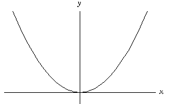Examples:

Cubic Functions
A cubic function is a quadratic with a cube term, that is, a power of \(3\):
where \(a,b,c,d\) are constants and \(a\) is not \(0\).
Examples:
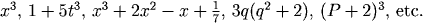Polynomial Functions
Generalizing the idea of linear, quadratic, and cubic functions, a polynomial is of the form
where \(n\) is a non-negative integer, all the coefficients \(a_n,a_{n-1},\ldots,a_1,a_0\) are constants, and \(a_n\) is not \(0\).
Examples:

Rational Functions
Think of a rational function as a function which generalizes a rational number, coming from the word ratio. In this case, a rational function is a ratio of polynomials, so can be written in the form
where \(p,q\) are polynomials and \(q\) is not 0. Notice all polynomials are special cases of rational functions, where the denominator polynomial is \(1\). Rational functions can be difficult to visualize graphically, but the following is a type of rational function which is easy to work with and common to see:
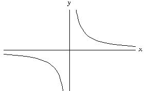Examples:

Power Functions
A power function is a function formed by raising a variable to a constant power and then multiplying by a constant, which may be one. Power functions can therefore be written in the form
where \(a,r\) are constants and \(a\) is not \(0\). Notice that unlike the terms in a polynomial, \(r\) is any real number, not just non-negative integers. Here's an example of a power function where the power is not an integer that shows up often:
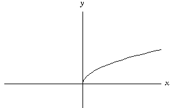Examples:
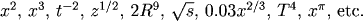Exponential Functions
An exponential function is a constant raised to a variable power and then multiplying by a constant. An exponential function can therefore be written in the form
where \(a,b\) are constants, \(a\) is not \(0\), and \(b\) is positive. (Thinking back to exponents, consider why \(b\) must be positive. For example, what happens if you try to define a function like \(f(x) = (-1)^x\)?) If \(b\) is less than \(1\), say \(b = 1/c\) for \(c > 1\), then the exponential can be written as \(f(x) = ac^{-x}\). Notice exponential functions are very different from power functions, even though both are formed via powers/exponents.
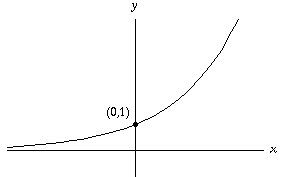
Examples:
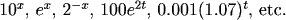Logarithmic Functions
Remember logarithms are the "reverse" of exponentials, so logarithmic functions are the "reverse" of exponential functions.
where \(b\) is a positive constant. Careful: an expression like ln(3) is a constant!
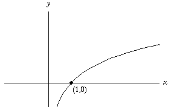Examples:
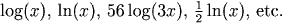Trigonometric Functions
Trigonometric functions are designated by name in mathematical writing. The definitions, which refer to the unit circle, are

 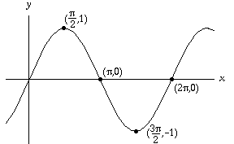
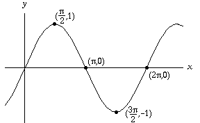Examples:


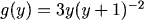


Practice
Question 2:
Question 3:
Question 4:
Question 5:
Question 6:
Question 7:
Question 8:
Question 9:
Return to Main